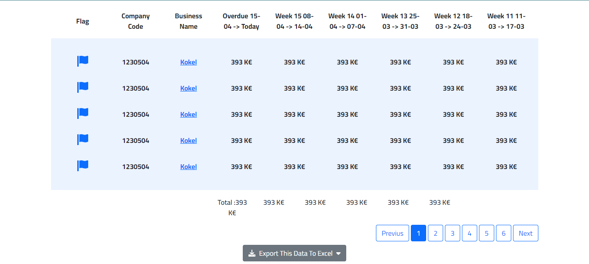

The report Overdue trend allows to visualize the evolution over time of the performance in debt collection.
It is particularly relevant because beyond the gross evolution of overdue amount per week or per month, it allows to filter them by customer groups, analytical fields, by type of status and status.
This approach highlights the causes of the improvement or deterioration of performance (more or less disputes, typology of customers in financial difficulties, etc.) and thus to treat them.
The overdue rate is displayed, as well as the total receivable that is displayed if the corresponding check box is selected. Both indicators can be adjusted according to the bracket you want to focus on: Total, +30d, +60d or +90d.
Like all other reports, it is also filterable by collector, by sales manager (or other actor associated with the customers) and by the client customized fields set as analytical.
The table shows the overdue trend by customers per week or month depending on the selected option. It can be sorted and filtered in many ways to target clients on which you want to act.
For example, a descending sort on overdue more than 90 days will show customers who have unpaid bills for a long time with as consequences a high risk for the cash and the profitability of your business.
View the aging balance on a given date by clicking on « Situation on ... » (top right of the screen).